Bundle Builder
A companion tool that makes the script and voice from your material in one pass, with no API key to set up
OFFICIAL MANUAL
From a slide deck to a subtitled, narrated video.
The official manual for SlideCast Studio (v5.5): add narration, captions, characters, BGM and opening/ending videos to your slides, and export the whole thing as video from the browser alone.
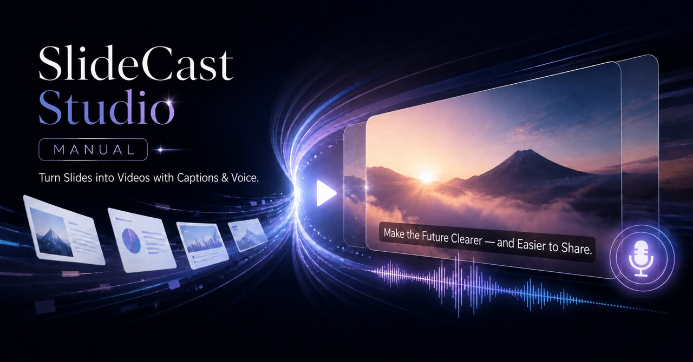
👋 OVERVIEW
What changed
Welcome to the official SlideCast Studio manual.
SlideCast Studio is a slide-video tool I built by heavily modifying an idea I found in a note post by Majin. It only exists because Majin published the prompt in the first place.
I took that prompt, modified it heavily, and turned it into an Apps Script app: SlideCast Studio v1.0.
SlideCast Studio v2 and later — what this manual covers — is a large update on top of that.
🌐 About the screenshots and labels
The screenshots on this page show the Japanese interface. The app itself also runs in English (switch with the language button at the bottom of the left-hand icon rail), and this manual uses the English labels. In English, the rail reads Slides, Script, This slide and Project.
🧭 How to read this manual
If this is your first time, the shortest path is chapter 4, “The dashboard and how to start a project”. If you used v5.0 or earlier, the layout has changed, so read chapter 5, “A map of the editor”, first. Click any chapter heading to open it.
🎬 Prefer video?
The tutorial videos, re-recorded on the v5.5 screens, are lined up chapter by chapter on the video manual page. Each chapter here also ends with links to the matching videos. The videos are narrated and captioned in Japanese.
What SlideCast Studio is and what it can do.
SlideCast Studio loads PDFs, images and videos into your browser, adds narration, captions, characters and background music, and exports the result straight to video. Nothing to install: all the work happens inside your own browser.
A companion tool that makes the script and voice from your material in one pass, with no API key to set up
Build a project by picking the aspect ratio, a screen layout, characters and a caption design
Click what you want to change in the preview and jump to its setting
Bands, outlines, shadows and more. 22 motions, emphasis, karaoke and name badges
Lip sync, speaking motion, expressions, gestures and auto acting
22 slide animations and 30 screen transitions
Stick text or images on, scroll them across, or pin them to a corner. With emphasis, tilt and motion
Drop in MP4 or WebM as a slide and set its sound and the range to play
Switch tracks from a given slide and crossfade between them
Fine-tune where each line starts, the gaps and the slide length, to the second
Put an opening and an ending video before and after
Video (MP4, WebM), PPTX, PDF, book-style PDF and image ZIPs
ℹ️ Which version this manual covers
It follows the screens and names of v5.5 “SPOTLIGHT”. For a closer look at what each release added, see the update articles on the home page.
Video export runs on your own computer. Here is what to aim for if you want it to be comfortable.
Rendering the video uses your own computer's browser memory.
| Installed memory | 720p | 1080p | 1440p |
|---|---|---|---|
| 8GB | roughly 20–40 slides | roughly 10–20 slides | not recommended |
| 16GB (recommended) | roughly 50–100 slides | roughly 25–50 slides | roughly 10–20 slides |
| 32GB | — | roughly 50–100 slides | roughly 20–40 slides |
There are three output resolutions: 720p, 1080p and 1440p (at 16:9 that is 1280×720, 1920×1080 and 2560×1440).
If the exported video stutters
The Standard (recording) export method records while it plays, so it depends on spare memory and processing power in the browser. Pause other work and close spare tabs while it exports, and the video comes out smoother. Choose High quality (frame rendering) as the export method and dropped frames and audio drift caused by load cannot happen (chapter 13).
Please read this: where your data lives, when it can disappear, and how API keys are handled.
All project data is saved “inside your browser (IndexedDB)”. Nothing is uploaded to an outside server.
🆘 It cannot be recovered
Once data is gone, the app cannot bring it back. Regular backups are the only protection.
⚠️ Leak risk
If an API key ever leaks and is misused, it can lead to a large bill.
🔒 Privacy & Safety in the app
When the app talks to outside services, where your data stays and how to cap API charges are summarised under Help on the left-hand icon rail → the Privacy & Safety tab.
Starting from Bundle Builder is recommended. You can also start from your own files or a blank project.
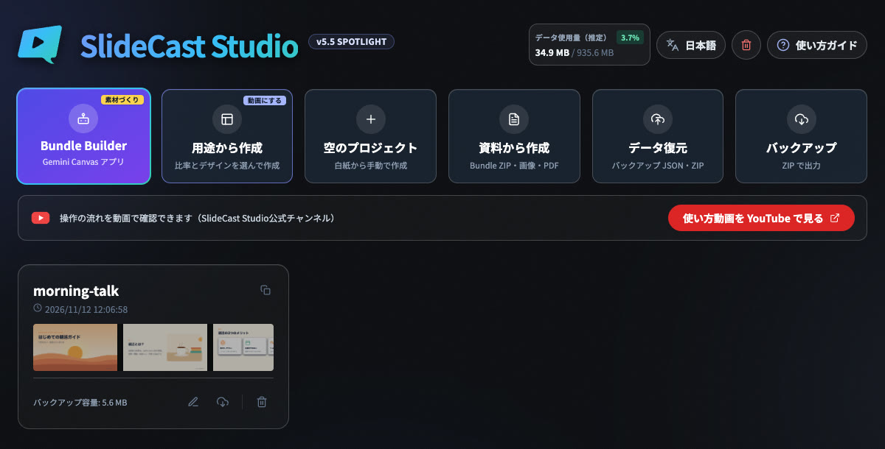
Bundle Builder is a companion tool that takes you as far as the script and the voice without any API key. On the dashboard, open Bundle Builder and press “Open in Gemini Canvas” to start it in your browser.
🧩 Open the Bundle Builder guide
You go through four steps shown across the top: Screen, Files, Characters and Design. The preview on the right shows what the project will look like with your choices.
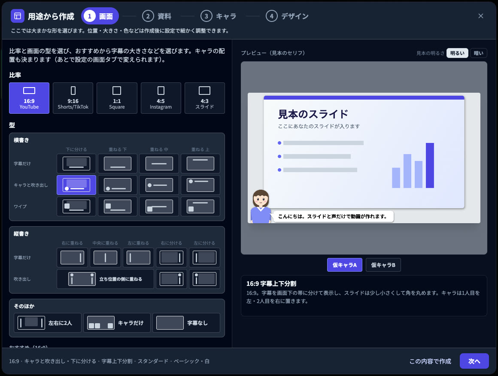
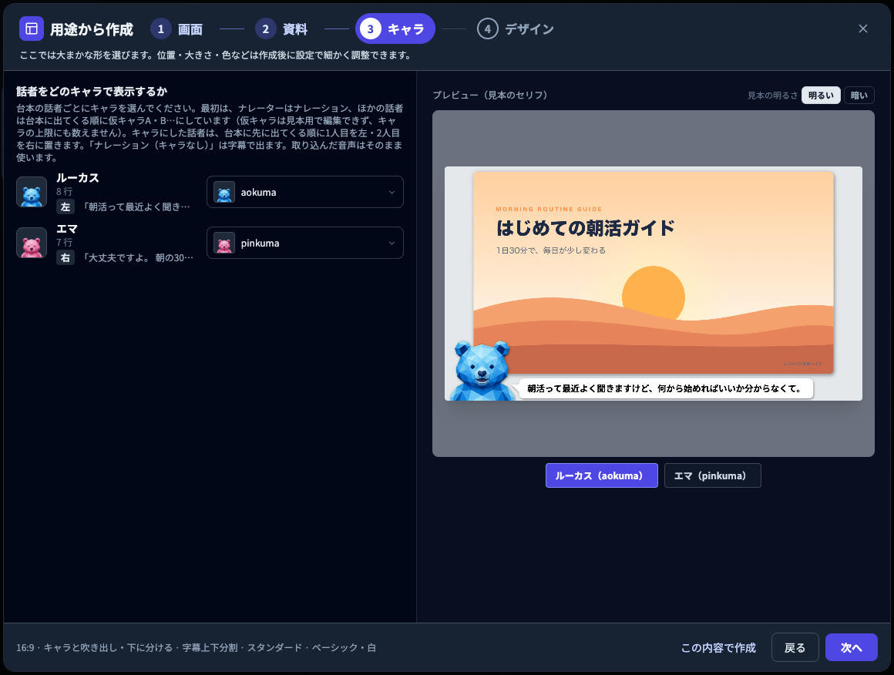
💡 You can change it all later
The aspect ratio, type and design can be changed after the project is created, under Project. Characters you add are saved to the character list and can be used in other projects too.
Create from files turns the PDFs or images you have straight into slides. There are two ways in, Select files and Select folder. Each PDF page and each image becomes one slide (images inside a ZIP go in filename order). Export PowerPoint and similar decks to PDF first, then import them.
Blank project opens the editor with no slides. Add material from Add slide on the left, or make an empty slide with Add blank slide.
When you import material, you choose how detailed the images used in the video should be. The default is Full HD (up to 1920 pixels on the long side), which is enough for a video headed to YouTube.
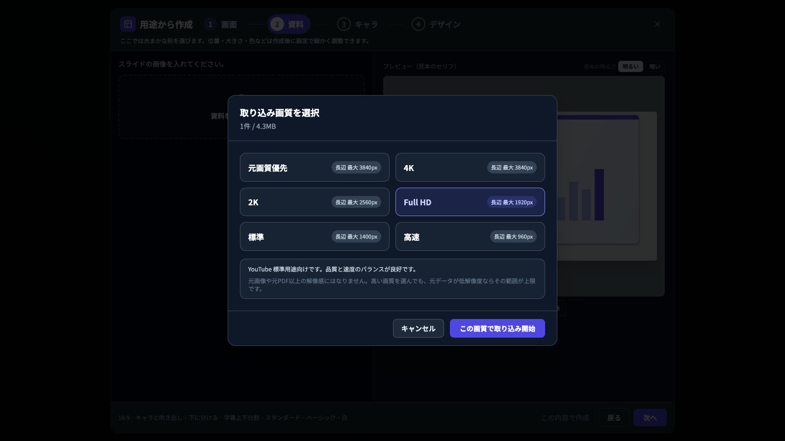
⚠️ The source is the ceiling
Choosing a higher quality never makes the result sharper than the original material.
Your projects appear as cards on the dashboard. Each card shows a rough measure of its actual data and its backup size.
The top of the dashboard shows how much browser storage is in use (an estimate). As it nears the limit, delete projects you no longer need, or back them up and move them out.
The layout changed a lot in v5.5. Start by getting a feel for where everything is.
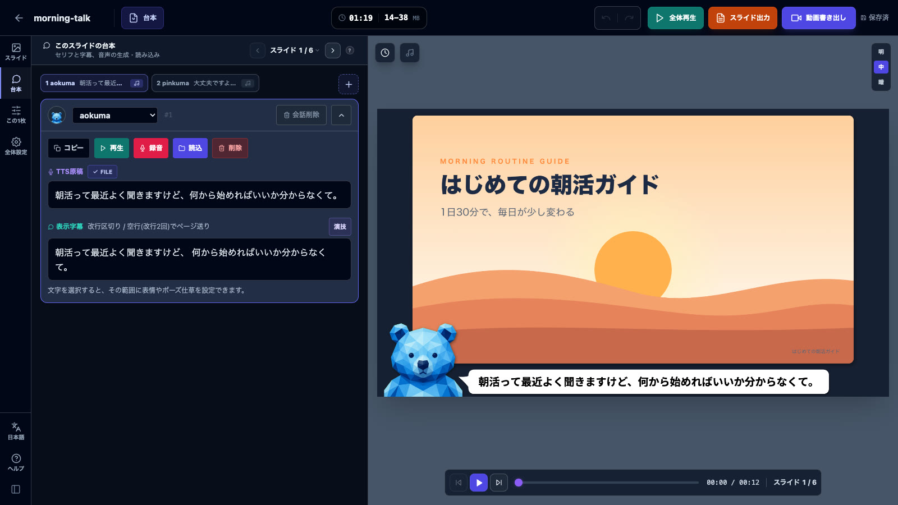
ℹ️ What is different from v5.0
The script and timeline panel at the bottom is gone: the script moved to Script on the left, and the timeline to the clock button at the top left of the preview. The settings button moved from the header to Project on the icon rail. Clicking the preview no longer plays or pauses; play from the button in the playback bar. The settings search box, the timing adjustment mode and the easy mode have been removed.
Settings are split in two by how far they reach.
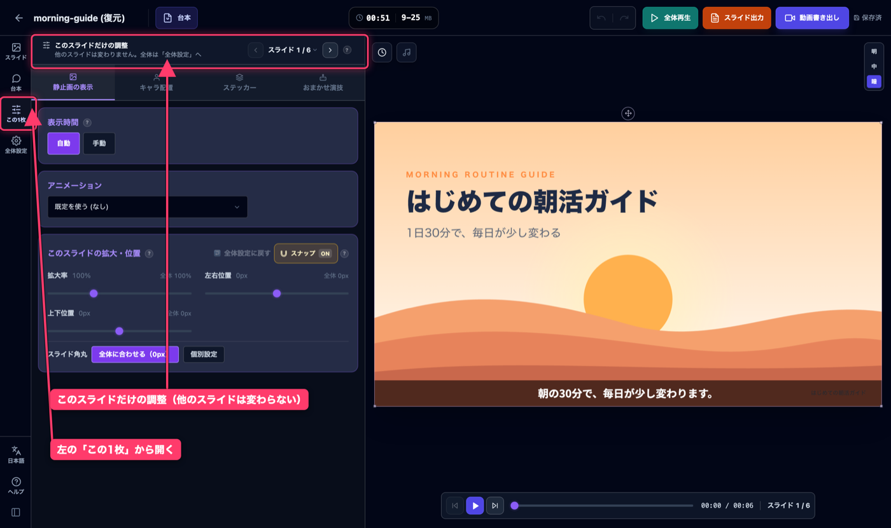
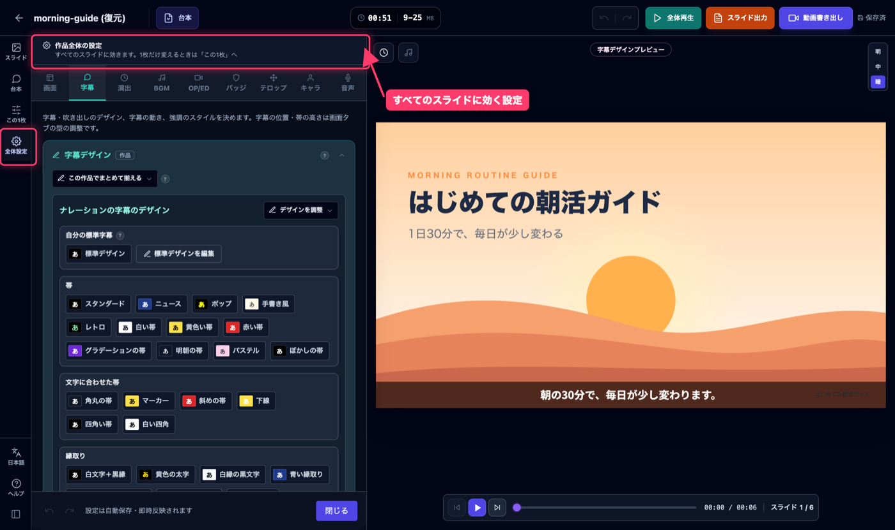
Settings save automatically and show up in the preview right away (only character edits wait for Save shared character). While settings are open, undo with the arrow at the bottom or Ctrl / ⌘ + Z.
When you do not know where a setting lives, follow it from the preview. Hover over the paused preview and the frontmost item (caption, character, name badge, sticker, badge, ticker, slide image or background) is outlined with a dashed frame and a name tag. Click it and the Adjust this menu opens.
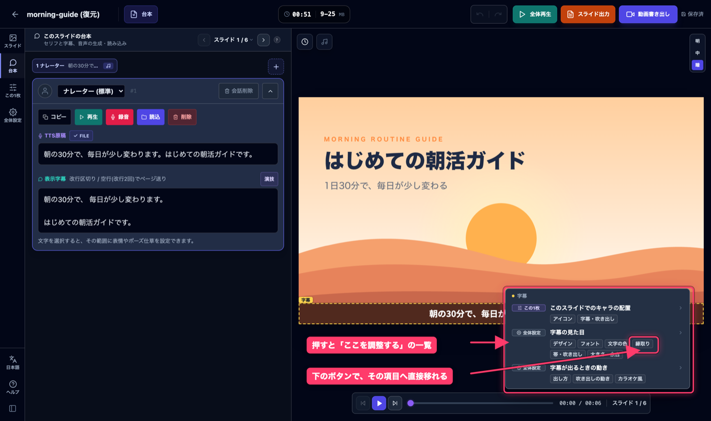
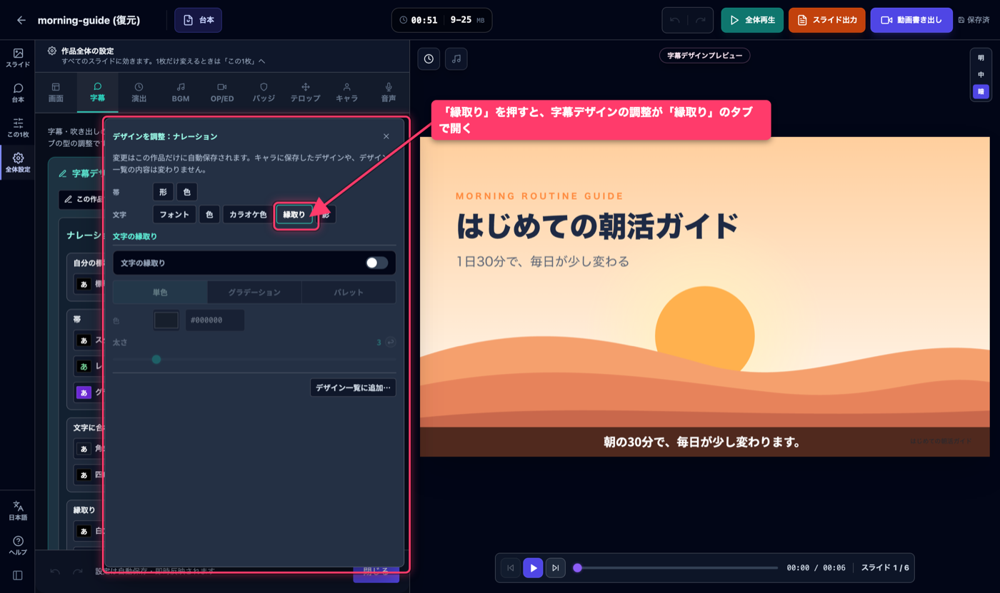
From reordering slides to editing the script and generating, importing or recording the voice.
Open the list with Slides on the left. Click a thumbnail to go to that slide and drag to reorder. Add slide at the very bottom adds material from files or a folder, and Add blank slide adds an empty slide. You can also drop images, videos, PDFs or ZIPs onto the list.
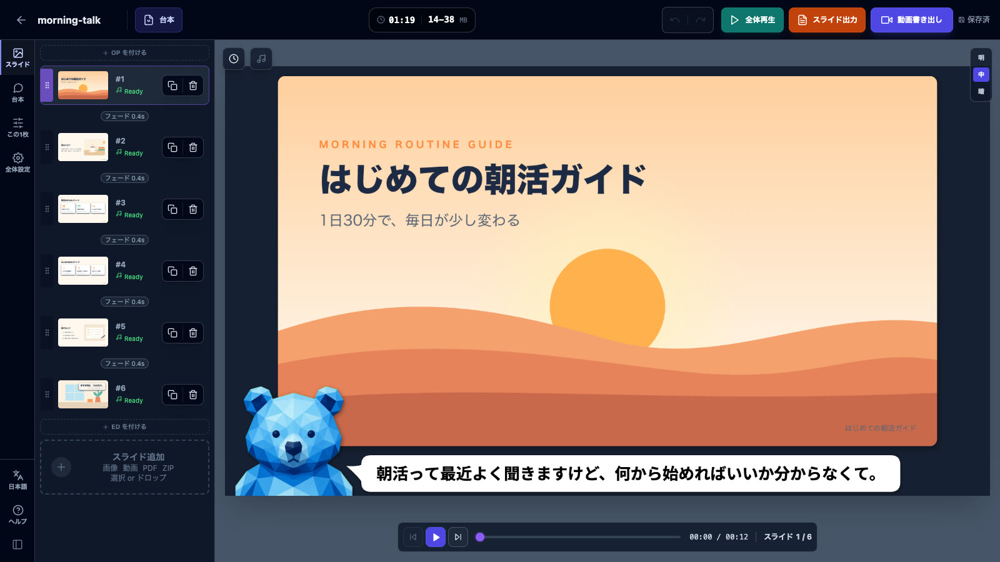
A slide with no material of its own. On top of the project background (solid colour, gradient, image or video) you can place captions, characters, speech bubbles, tickers, badges and stickers. Good for a title screen, chapter breaks, an end card or a conversation-only scene. Click the background in the preview to go to its setting. Set an image later and it becomes an ordinary image slide.
Script on the left opens the script for the current slide. It is also what you see first when you open the editor. The buttons along the top are this slide's lines (script blocks); add one with +.
Select text in Display captions and buttons such as Emphasis and Add performance appear next to it (chapters 7 and 9).
Script in the header opens a screen for making or bringing in the whole script at once.
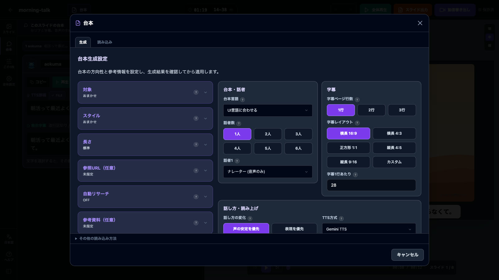
⚠️ Video slides are skipped
A generated script is filled in, in order, on still-image slides only.
ℹ️ Differences between editions
The Record button does not appear in the Apps Script edition. The local HTML edition is meant to be used without TTS, so the voice-generation features do not appear (recording and importing audio files still work).
How captions look, where they sit, name badges, motion, emphasis and karaoke.
Captions are set on the Captions tab under Project. It has four sections: Caption design, Name badge, Caption motion and Highlight styles. Where captions sit and how tall the band is are decided by the type on the Screen tab (chapter 11).
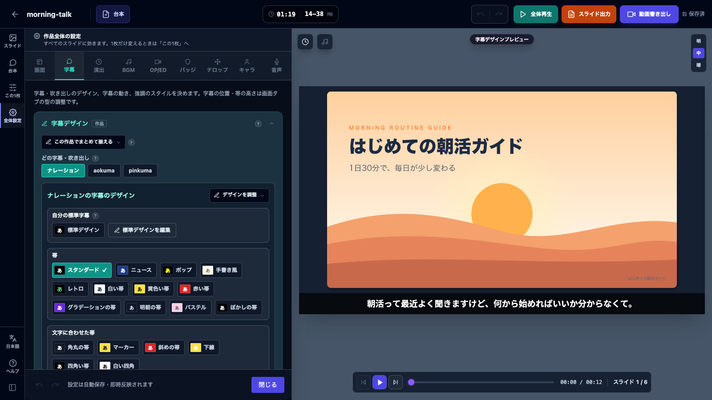
Turn on the switch in the heading and the speaking character's name appears at the top left of the caption. Name badge design has tabs for the name, size, position, shape, background and text, and you can drag the badge in the preview.
Select text in the script's Display captions, press the yellow Emphasis button and pick a style, and just that word changes how it looks. Only the caption's look changes; the reading does not.
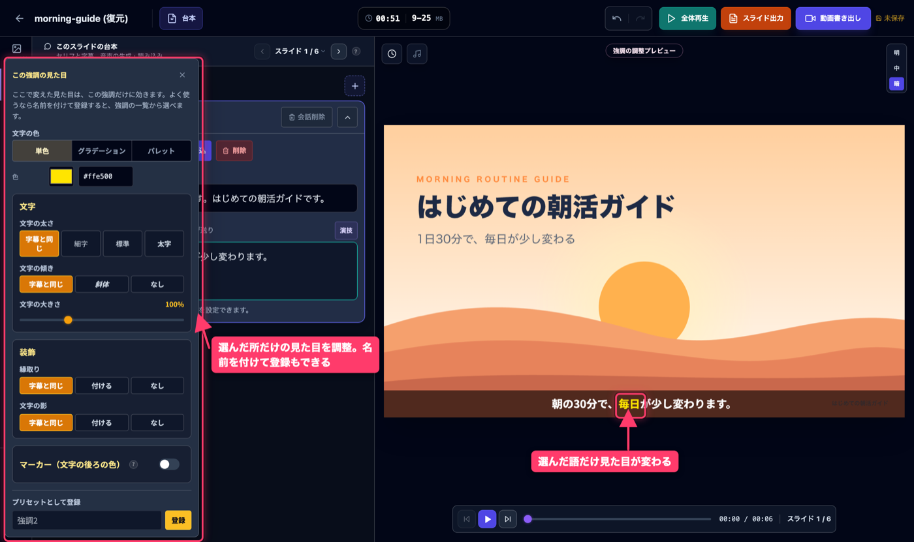
Choose a vertical type for the screen and captions and speech bubbles are set vertically. The options switch to vertical ones such as band position (left, centre, right), width and the orientation of Latin letters and digits (9:16 and similar).
Slide animations, screen transitions, sound effects and pacing.
All of these are set for the whole project on the Effects tab under Project. You can also change a single slide or a single boundary.
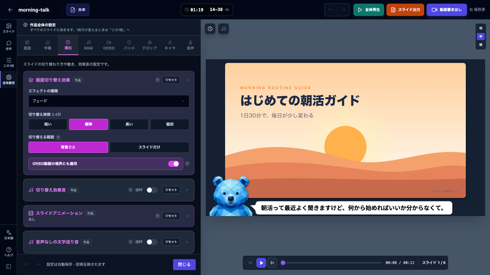
Gives still images a slow zoom or pan. Click Default effect to open the list; hover over one and the current slide plays that motion on a loop. Broadly there are four kinds: zooms, pans, continuous sways (storybook sway, handheld camera, heartbeat and so on) and ones that move only at the start (pop-in, start wide and so on).
ℹ️ Not applied to video slides
A video moves by itself, so slide animations are not applied to it. The preview is still while you edit, so try the motion by hovering, or check it with play or Full preview.
How the screen changes the moment one slide moves to the next. New projects use a 0.4-second Fade. Effect type has 21 buttons (three of them have a direction, counted four ways each, for 30 in all); hover over one and the transition from the current slide to the next plays on a loop.
Click the tag between two slides in the slide list to open Boundary transition and change the type, duration, scope and sound for just that boundary. Boundaries that differ from the project setting have coloured tags. Reset all returns them to the project setting.
Short 0.1 s, Standard 0.2 s, Long 0.4 s, or Custom 0–3 s. To change just one gap within a slide, move the voice clip on the timeline (chapter 11).
Create characters, assign them to speakers, and add placement, motion, expressions and gestures.
Press Create new on the Characters tab under Project. Characters made here are shared across every project and can be picked in any of them (you can also add one in the middle of Start from a use).
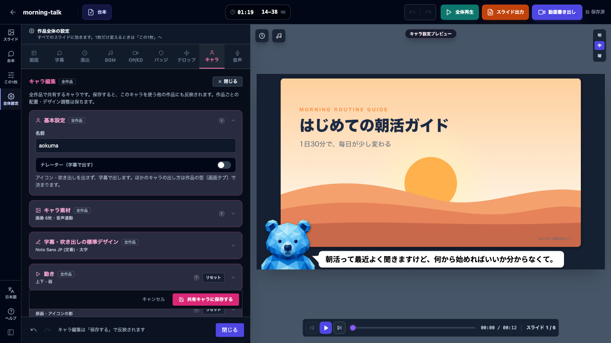
Save shared character finishes it. Character edits are the one place that waits until you save.
Registered-order animation: register several still images and they switch in the order you registered them while the character speaks. Two images are enough. Reorder by dragging the cards or with the arrow buttons.
Single-file animation: register one GIF, animated WebP or APNG file and it plays while the character speaks. The playback speed is adjustable.
6-image lip sync: six still images switch to follow the loudness of the narration. Each of the six has a fixed role.
With every method, the character only moves in the video while it is speaking. Assets are kept per method, so switching does not delete them. For voice-driven, Mouth cadence works best on Auto.
A character pack ZIP made in MouthLoop can be added as is, whatever the method. When the app recognises a pack, a confirmation screen shows the expressions and gestures inside. Register character switches the method to voice-driven and brings in the six images plus the performance assets (six expressions and pose gestures) together.
In the preview, drag icons and speech bubbles to move them and use the corners to resize them.
Use the expressions (smile, sad smile, sad, angry, surprised, troubled, thinking) and pose gestures (wave, point and so on) in a MouthLoop character pack to match the lines.
Auto acting picks an expression that fits built-in cue words — “actually” or “unexpected” bring surprise, “worried” brings troubled, and so on. It does not use AI, so there are no extra requests or charges. Automatically placed cues carry an “auto” mark, and Remove auto cues removes only those (ones you placed by hand stay).
ℹ️ About timing
Performance timing is calculated from where the selected text sits and how long the audio is. It does not use speech recognition to find when each word is spoken, so treat it as staging.
Voice settings in character editing chooses the voice used when generating in the app (chapter 12). Gemini TTS offers these 30 voices.
Stick things on a slide, run text along a band, pin something to a corner, or drop in a video.
Press + on the Stickers tab under This slide to place a sticker. It puts text or an image (a PNG with a transparent background, for example) on top of the slide. Drag the frame in the preview to move it and use the corner and edge handles to resize it (with Snap on, it snaps to the centre and similar). Up to 10 per slide.
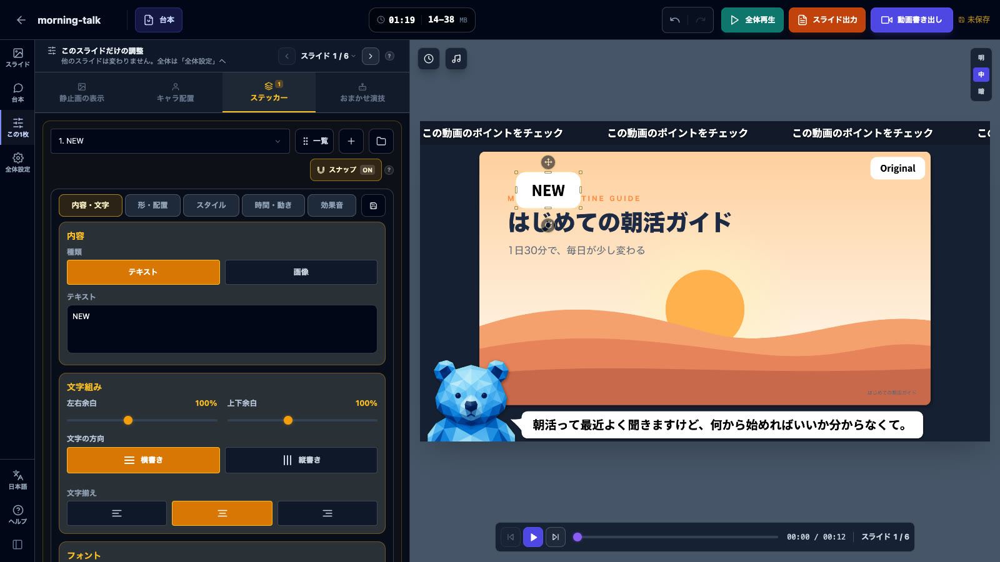
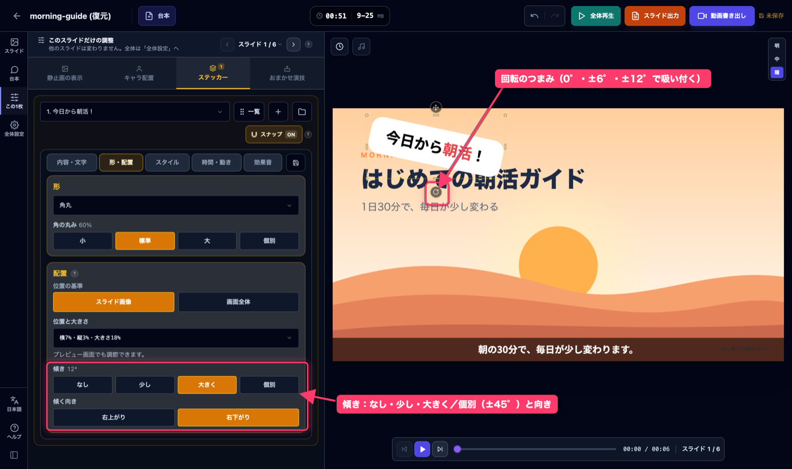
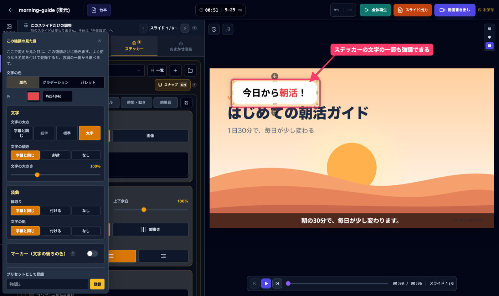
The Tickers tab under Project. Keep announcements or headings in a band at the top or bottom of the screen. Top ticker and Bottom ticker are set separately.
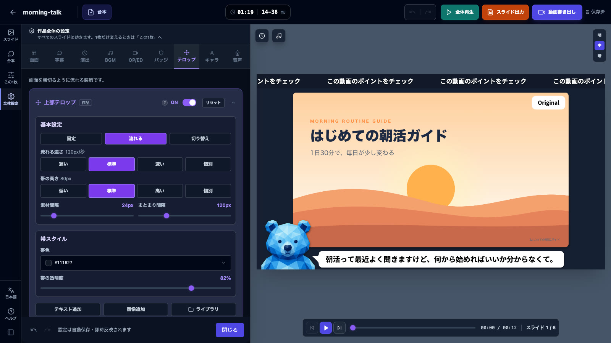
The Badges tab under Project. Keep short text or a logo in each corner — top left, top right, bottom left and bottom right — one per corner.
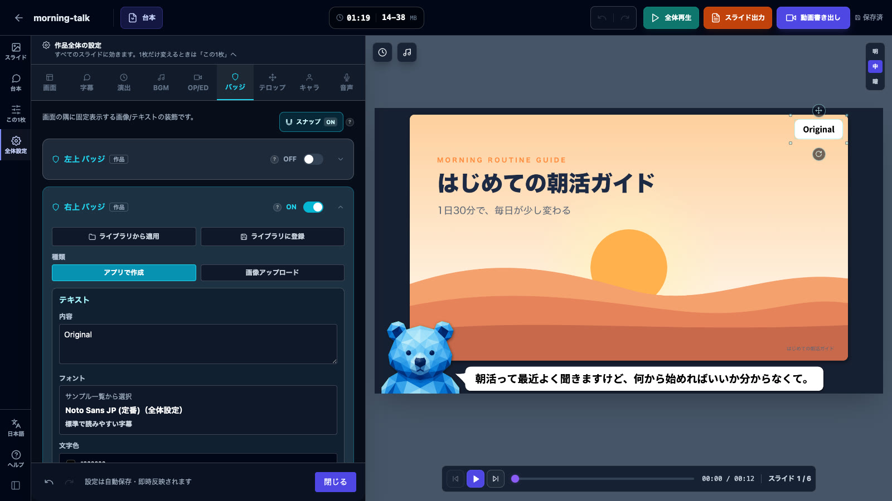
⚠️ Please note
Using a badge to hide another service's watermark may break that service's terms. With a top ticker showing, setting Position based on to the whole screen hides badges in the top corners behind the ticker band.
Hand a video file (MP4 or WebM) to Add slide in the slide list and it comes in as one slide (with a “video” mark on the thumbnail). Import quality is a setting for images; videos come in at their original quality. Its settings are on the Video playback tab under This slide.
Lay down music, tune the timing within a slide, and decide what comes before, after and around everything.
The music note at the top left of the preview, or the BGM tab under Project. No music comes with the app, so add your own track files with Add BGM (you can also make a track from “Make music in AI CODE BGM STUDIO”).
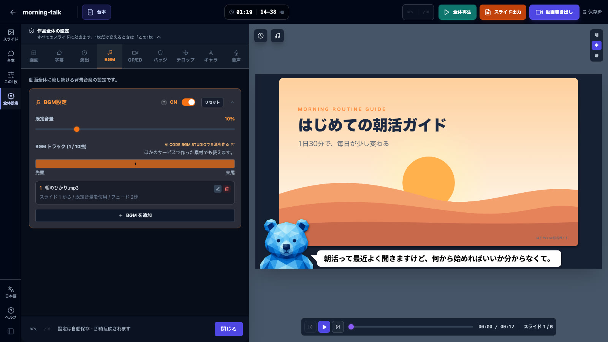
The clock button at the top left of the preview opens the timeline for the current slide under the preview. Drag the handle between them to change its height.
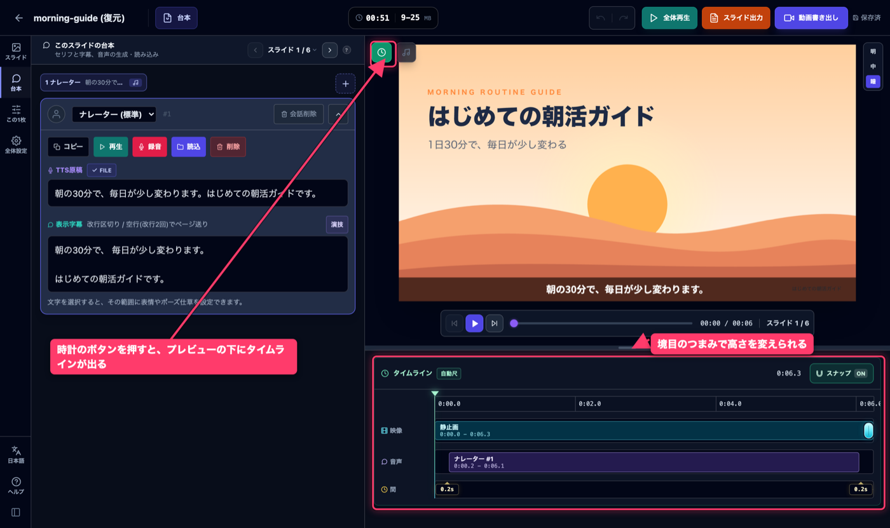
Click or drag along the ruler to show the frame at that second in the preview. With Snap on, clips snap to the edges of other clips and to the playback position. You can also set the slide length by typing seconds into This slide → Still image display → Duration. Even if you make it too short, it keeps going until the voice ends.
Add the opening and ending videos on the OP/ED tab under Project, or with Add OP / Add ED in the slide list. Supported formats are MP4 and WebM (up to 500MB), and they are set and saved separately for each aspect ratio (16:9, 9:16 and so on). Rows for the OP and ED appear at the very top and bottom of the list; click one to play it in the preview.
The transition at the OP and ED boundaries is set with Apply to OP/ED boundaries in chapter 8 and with the boundary tags.
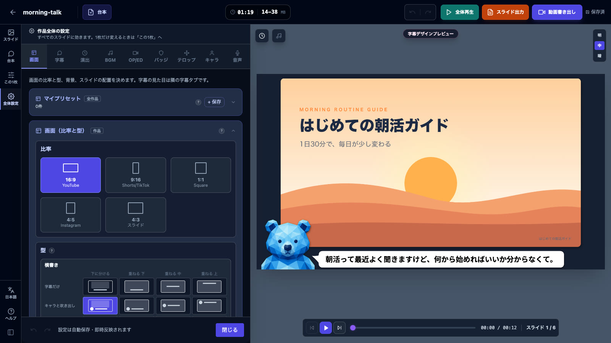
For people who want to generate voice from the editor with their own API key instead of using Bundle Builder. The settings are on the Audio tab under Project.
The settings screen lets you do the following.
You can choose from these Gemini models (with TTS support).
⚠️ Pro TTS tends to fail on the free setting
On the free usage setting, Pro TTS is likely to fail. Use Flash TTS, or turn on the paid plan.
When you pick a model, an estimated cost is shown. With Gemini 3.8 Flash TTS and 3.8 Flash Lite TTS, besides the voice list, Other voice (enter ID) lets you use voices from the AI Studio voice library or your own custom voices (a custom voice only works with an API key from the project that created it).
Add this if you want a steady, even voice, at the cost of less expression.
⚠️ Free tier and charges
The AI Studio free tier limits the number of requests per minute and per day. If you hit the limit, you can also make the voice in the AI Studio Playground and upload it. Generation is billed to the billing account of the project that created the key. Setting a monthly cap on the “Spend” page gives you peace of mind.
Exporting video (MP4, WebM) and PPTX, PDF and images.
Press Export video and the confirmation screen lets you choose the following.
The frame rate can be 30fps (standard) or 60fps (smooth). An estimated file size is shown as well.
At the very top, choose Standard (recording) or High quality (frame rendering). The default, Standard (recording), records while it plays. High quality (frame rendering) waits for each frame to finish before saving it, so dropped frames and audio drift cannot happen even when the computer is busy. It takes longer and needs a supported browser (Chrome, Edge and similar).
ℹ️ Browsers without MP4 support
Some browsers cannot write MP4. In that case the export switches to WebM automatically.
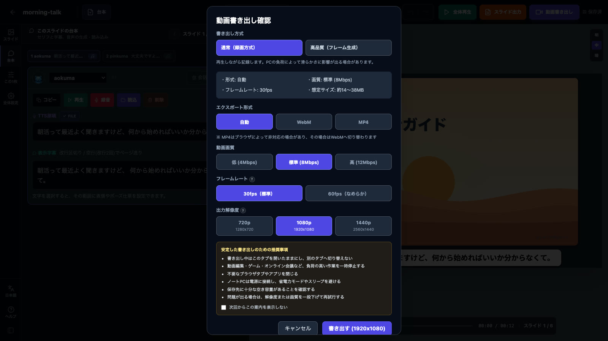
If memory use is high, you are warned before the export starts.
These cautions apply to Standard (recording). High quality (frame rendering) is built so that load cannot drop frames, so other work during the export is fine (keep the page open and do not let the computer sleep).
⚠️ MP4 compatibility
Even an MP4 export may not upload as is. Some social platforms do not support every codec, so convert to H.264 if you need to.
Export slides offers these formats.
You can also set the following.
A document PDF that lays out “slide image + caption text” on portrait A4. Long captions are split across pages automatically.
Ideal for printed handouts and seminar materials.
ℹ️ Video slides
A video slide is exported as a still of its first frame. The video itself is not included.
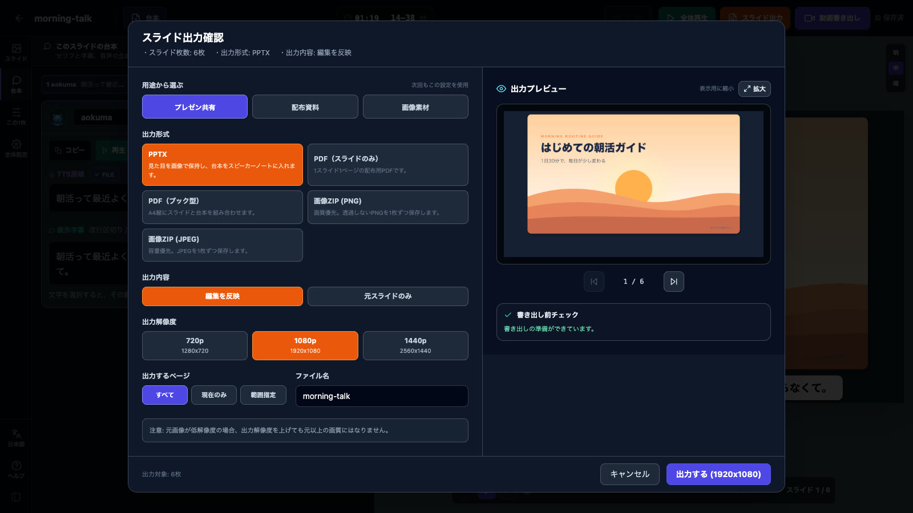
Your data lives only in the browser. Regular backups are your only safety net.
Backup on the dashboard lets you choose what to include and writes it out as a ZIP. Save backup on a project card saves just that project.
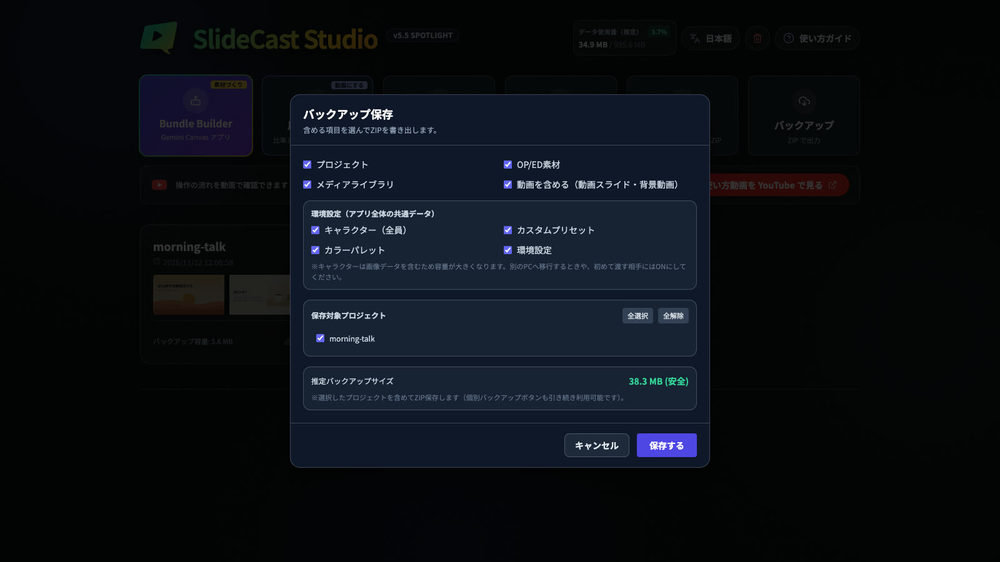
The estimated backup size is shown in three levels: safe, caution and danger. At the danger level, restoring may fail, so split the projects across several backups. Characters include images and take up a lot of space. Turn them on when moving to another computer or handing a backup to someone for the first time.
Restore data on the dashboard: choose or drop a backup ZIP or JSON. It restores on top of your existing data without deleting it, and lets you choose what to do when the same character or project already exists (skip / replace / add with new names). For a backup saved without videos, put the videos back afterwards with Replace video.
The trash-can button on the dashboard lets you choose which categories to delete.
⚠️ Deleting cannot be undone
Saving a backup first with Open backup is recommended.
Common symptoms and what to do about them.
The steps for moving to the latest version.
If you have already purchased SlideCast Studio, copy the latest version from the same paid note share link you used before.
If you want to carry over your existing projects, library and settings, create a backup first from Backup on the dashboard, just in case.
To update the Apps Script edition while keeping the same URL, replace the files in your existing Apps Script project with the latest versions, then redeploy the existing deployment as a “new version”. Which files to replace depends on the version, so check the update article for that release.
If you use the local HTML edition, download “SlideCast Studio〖ローカル版〗.html” — 〖ローカル版〗 means “local edition” — and open it.
⚠️ Carrying your data over
If you open the app from a new Apps Script project or in a different browser, your earlier data will not appear automatically. Restore it from a backup in that case.
SlideCast Studio is still being updated. For the current news, follow this note and the author's X. Questions, requests and bug reports are welcome in the comments.